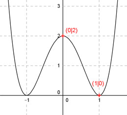

Aufgabe 97 Der Graph einer achsensymmetrischen ganzrationalen Funktion 4. Grades geht durch den Punkt (0|2) und hat in (1|0) einen Tiefpunkt. Wie lautet seine Funktionsgleichung?  Allgemeine Form einer achsensymmetrischen ganzrationalen Funktion 4. Grades: f(x) = ax4 + cx2 + e f’(x) = 4ax3 + 2cx f’’(x) = 12ax2 + 2c 3 Bedingungen: 1. Geht durch den Punkt (0|2) bedeutet : f(0) = 2 --> a * 04 + c * 02 + e = 2 --> e = 2 2. Hat in (1|0) einen Tiefpunkt bedeutet zum einen: (e = 2 eingesetzt) f(1) = 0 --> a * 14 + c * 12 + 2 = 0 --> a + c + 2 = 0 I 3. Hat in (1|0) einen Tiefpunkt bedeutet zum anderen: f’(1) = 0 --> 4a * 13 + 2c * 1 = 0 --> 4a + 2c = 0 II I * (-2) + II -2a - 2c - 4 = 0 4a + 2c = 0 ----------------- 2a - 4 = 0 |+4 2a = 4 |:2 a = 2 a = 2 in I eingesetzt. 1 + c + 2 = 0 4 + c = 0 |-4 c = -4 Gesuchte Funktionsgleichung: f(x) = 2x4 - 4x2 + 2